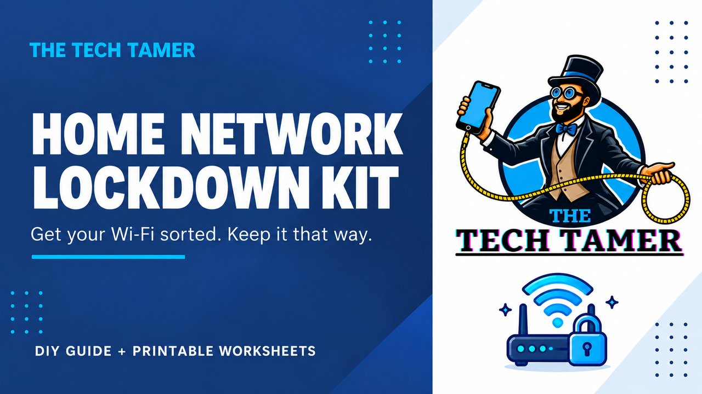

Guides & checklists
Home Network Lockdown Kit
$9one-time purchase
Take a closer look at your home Wi-Fi and connected devices, with a practical guide to improving your setup.
- 19-page plain-English guide
- Connected-device inventory
- Monthly checklist
- Instant digital download
Purchase and download through Gumroad.